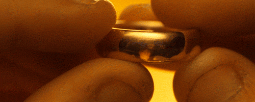

EL QUIZ DE LOS ANILLOS
Cuál de los hobbits es el Portador del Anillo Único?
Merry
Pippin
Frodo
Shin Chan

Selecciona el apodo por el que se conoce al personaje de Gandalf
El rojo
El gris
El viejo
El guarro
¿Qué significa "Mellon" en élfico?
Amigo
Espada
Melón
Es euskera
¿Cuál es el verdadero nombre de Gollum?
Pepe
Bilbo
Sméagol
Trampa, es Gollum
¿Con qué otro nombre se suele conocer a Aragorn?
Ned
Anakin
Isildur
Trancos
En La Comunidad del Anillo, Galadriel regaló a Gimli el enano...
Tres cabellos
Una cuerda mágica
Vino
Las gracias
En Las Dos Torres se puede ver cómo Viggo Mortensen se lesiona en una escena, ¿qué le sucede?
Se corta el dedo
Se disloca un hombro
Se aplasta la nariz
Se rompe el dedo del pie
¿Qué actor confirmó durante la grabación de El Retorno del Rey que conocía el sonido de un hombre siendo apuñalado?
Ian Mckellen
Christopher Lee
Viggo Mortensen
Elijah Wood
¿De qué conocido cantante es hija la actriz que interpreta a Arwen?
Steve Tyler
Elvis
El Fary
Bruce Springsteen
Indica qué enano no acomapañó a Bilbo a la Montaña Solitaria
Kili
Mili
Bifur
Bofur
Comprobar resultados